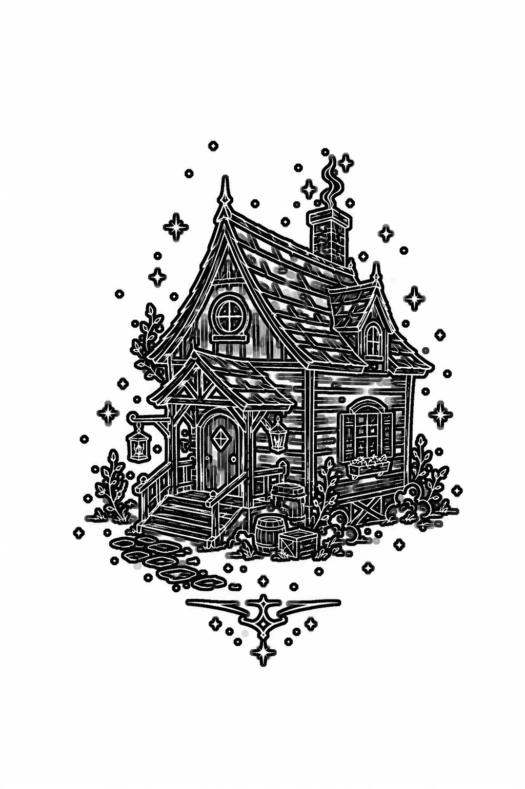

Home
About
Scene Library
Recognition
Contact
The Fairytale Forest Studio
A place where people can see the scenes they carry.
Not every path begins with certainty.

Follow the lights into the forest →